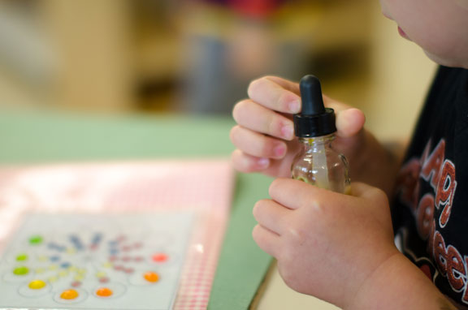

M.A. | PhD
Art Education
The program spans many disciplines, and offers opportunities to specialize in many aspects of art education. While we offer a strong K-12 focus, many students come into the program with interests in museum education or community arts organizations.
Graduates become educational leaders in many contexts – school districts, museums, community arts organizations, government agencies – or often pursue further graduate study.
Priority deadline: December 1
Admissions decisions: January

Professor
James Bequette
Place-specific, culturally relevant, arts education taught from a critical perspective | Mentoring future art teachers | Design process and aesthetic problem solving. Full profile
Research I
Transform through research
Areas of expertise:
- Place-specific, culturally relevant, arts education taught from a critical perspective
- Mentoring future art teachers
- Design process
- Aesthetic problem solving
Engaged and active
Engage at international, national and local levels
Faculty work closely with national, state, and local initiatives in art education. You are encouraged to collaborate on the development, implementation, and evaluation of these programs.
Curriculum
M.A students: Select plan A or B
M.A.: Thesis
(Plan A)
- 10 thesis credits
- approximately 450 hours of work
- involves original research in the form of a "mini-dissertation" divided into chapters
- is likely to require human subjects (IRB) approval
- final copy is bound and submitted to the Graduate School
- often pursued by students who intend to pursue a Ph.D.*
*Completing a thesis does not guarantee admission to a Ph.D program, though, if accepted, the thesis can serve as the basis of your dissertation.
Curriculum
31 total credits
- CI 5078 Application of aesthetic theory in art education (2 cr.)
- CI 8075 Seminar: Art education (2 cr.)
- CI 8079 Research in Art education (3 cr.)
- CI 8133 Research methods in curriculum and instruction (3 cr.)
- 5 additional credits related to your major, selected in consultation with your adviser
- 6 minor, or related field, credits
- 10 Thesis credits: CI 8777
M.A students: Select plan A or B
M.A.: Final Paper (Plan B)
- 3 credit "Problems" course
- approximately 120 hours of work
- results in 1 paper, 40-60 pages in length, divided into sections. Or 2 papers, each 20-30 pages
- may or many not involve human subjects (IRB) approval
- final copy is not submitted to the graduate school
- often pursued by students who aren't committed to pursuing a Ph.D.*
*It is possible to complete a final paper and later pursue your Ph.D. You will apply with less research experience, but will still be considered for admission based on the strength of your application.
Curriculum
30 total credits
- CI 5078 Application of aesthetic theory in art education (2 cr.)
- CI 8075 Seminar: Art education (2 cr.)
- CI 8079 Research in Art education (3 cr.)
- DES 8181 Research ethics (1 cr.) or Responsible conduct of research (RCR) part 1 & 2 workshops
- CI 8095 Problems: Art education (3 cr.)
- 13 additional credits related to your major, selected in consultation with your adviser
- 6 minor, or related field, credits
Common curriculum
PhD
Your PhD coursework will center on your research interests. The following curriculum outline will prepare you for your dissertation.
- CI 8131 Critical examination of curriculum in context (3 cr.) + CI 8132 Teaching theory and research (3 cr.)
- 15 credits in your major track
- CI 8133 Research methods in CI
- CI 8148 Conducting qualitative studies in educational contexts
- OLPD 8812 Qualitative research in education
- 9 additional credits in qualitative, quantitative or mixed methods
- 12 credits from outside your track (minor)
- A minimum of 3 elective course credits
54 Course credits | Doctoral thesis credits |
78 Total credits
Opportunities
Funding
Support is available in the form of:
- Teaching Assistantships. The majority work as student teaching supervisors for M.Ed. initial licensure students. Daytime availability, a teaching license, and teaching experience are required
- Research Assistantships
- Fellowships. Based on a departmental nomination process. You will be notified by the Director of Graduate Studies if you are being considered for a fellowship
A typical tull benefits assistantship (tuition, health insurance + stipend) 20 hours/week at approximately $18/hour. Benefits are pro-rated based on the appointment percentage. Learn more: Graduate Assistant Office.
Have a complete application in by December 1 to be considered for these positions for the following academic year.
While support is not guaranteed, we make every attempt to financially support full-time students through completion. You may also explore assistantships available outside our department on the University's employment page.
Credit for past work
Transfer credits
M.A. students must complete at least 60% of coursework (not including thesis credits) within our program. PhD students may transfer no more than 15 credits from an outside institution.
A maximum of 12 graduate course credits taken as non-degree seeking or non-admitted status at the University of Minnesota can be transferred--this is counted separately from the maximum 60%, or 15 outside institution credits.
For example, a PhD student could transfer a maximum of 27 credits (15 outside + 12 non-degree from UMN).
If you earned a M.A. at the UMN, please contact the Graduate Studies Coordinator to discuss transfer procedures.
Thesis credits cannot be transferred.
After you are admitted, you will work with your adviser to determine which credits may transfer.
Graduate Studies Coordinator
Kristina Pearson
cigs@umn.edu
fax: (612) 624.8277
office: 125H Peik Hall
Office hours 8:00 - 3:30